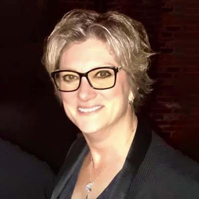

<div class="container">
	<div class="row">
        <div id="speaker-detail" class="col-lg-10 col-lg-offset-1">
            <div class="row">
            	<button title="Close (Esc)" type="button" class="mfp-close">×</button>
                
                <div class="col-md-5 col-lg-5 no-padding">
                    
                </div>
                    
                <div class="col-md-7 col-lg-7">
                    <h2>Missy <span>Koonce</span></h2>
                    <p class="lead">Kansas City Celebrity</p>
                    <!--
                    <ul class="social list-inline list-unstyled">
                    	<li><a href=""><i class="fa fa-2x fa-facebook-square"></i></a></li>
                        <li><a href=""><i class="fa fa-2x fa-twitter-square"></i></a></li>
                        <li><a href=""><i class="fa fa-2x fa-google-plus-square"></i></a></li>
                        <li><a href=""><i class="fa fa-2x fa-linkedin-square"></i></a></li>
                    </ul>
                    -->
                    
                    <div id="content">
                    	<p>Missy Koonce has been a bar owner (bar Natasha), cabaret singer, music producer, theatre producer, actress, choreographer, director, emcee and mentor. Although you probably know Missy primarily as a Director/Choreographer; she has worked in virtually every theatrical venue
in Kansas City in some capacity. Missy is also known for performing in, coordinating entertainment AND hosting a myriad of “Not-For-Profit” Kansas City and Johnson County events. </p>
<p>Missy’s journey, with public service, started with ACT UP and AIDS Walk Kansas City in 1989; she has been an official AIDS Walk Emcee ever since. From 2000 to 2002, Missy was a member of the PFLAG Leadership Committee, in 2008 she received the GLADD Leadership Award and the Greater Kansas City Community Service Award. In 2005, Missy joined the AIDS Service Foundation Board and went on to serve as it’s President from 2013 to 2017.</p>
<p>Although recently moved to Indianapolis; it has always been her great honor to be a part of The Greater Kansas City and Johnson County Communities, which will always be communities of unconditional love and tireless support.</p>
                    </div>
                </div>
            
            </div>
        </div>
    </div>
</div>